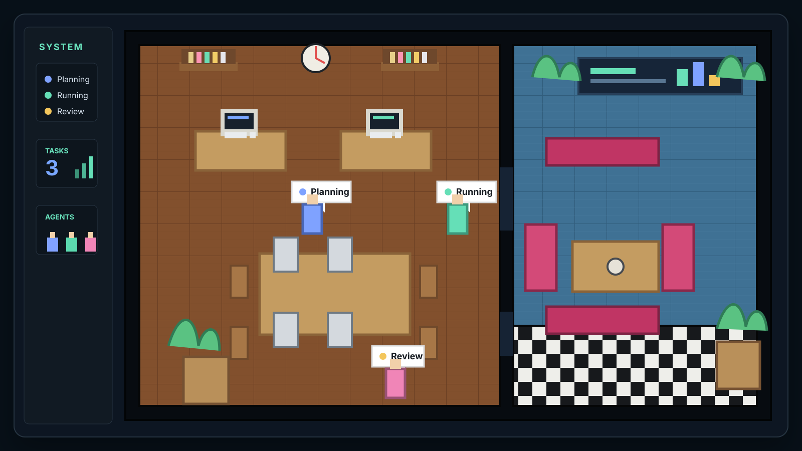

1
Install
curl -fsSL https://raw.githubusercontent.com/lianjiawei/hiclaw-py/master/scripts/install.sh | bash
Linux / macOS / WSL2 自动克隆、创建 venv、安装 CLI，并构建 Dashboard。
Industry Intelligence · Multi-Agent Operations
HiClaw 将规划员、执行员、复核员和用户自定义 Agent 组织成一个可运行的协同系统， 面向安全生产、稳定运营、自动化提醒、应急分析与长期运行任务。
$ hiclaw setup
选择 Provider、消息通道、Dashboard 监听地址
$ hiclaw start
Dashboard: http://127.0.0.1:8765/core
$ hiclaw status
HiClaw is running · 3 agents ready
Quickstart
curl -fsSL https://raw.githubusercontent.com/lianjiawei/hiclaw-py/master/scripts/install.sh | bash
Linux / macOS / WSL2 自动克隆、创建 venv、安装 CLI，并构建 Dashboard。
hiclaw setup
交互式创建 `.env`，引导配置 Provider、Telegram / Feishu 和 Dashboard。
hiclaw doctor
hiclaw start
hiclaw status
hiclaw logs -f
用于服务器长期运行；本地调试可以使用 `hiclaw run` 或 `hiclaw-tui`。
What it does
规划、执行、复核可以各自承担任务，也可以由用户自定义 Agent 加入协同。
支持定时提醒、巡检记录、日报生成、风险排查和面向长期运行的行业任务。
像素办公室实时展示 Agent 状态、等待授权、工具调用和任务完成过程。
首次启动前自动诊断 `.env`，用友好提示替代晦涩的底层异常。
支持 Telegram、Feishu、TUI 和后台服务模式，适配个人与团队使用方式。
工具授权、工作区限制、日志追踪和后台状态命令帮助系统可控运行。
Dashboard
HiClaw 的 Pixel Office Dashboard 将抽象任务状态转化为可观察的运行画面： 工作、等待、阻塞、完成和空闲都能被快速识别。

Architecture
轻量任务直接走单 Agent 路径，降低响应延迟。
复杂任务按计划分解给 planner、executor、reviewer 并行或串行协作。
通过能力目录扩展自定义 Agent，为行业流程沉淀专属角色。